Animation of a Coffee Machine
The HQ symbol libraries cover most building automation and control requirements. However, there are always customized objects not covered by the library, including:
- Burners
- Heat pumps
- Heating boiler
- Refrigeration machines
- Tank displays
- and so on
To illustrate how to animate such objects in a Desigo CC graphic, the following is an example of the most important functions of a coffee machine, for example:
- Operating indicator (without operation)
- event lamp
- Operating element (operation in the Extended operation tab)
- Position display (knob)
- Level display (graphical)
- Water temperature
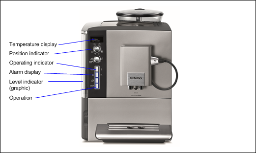

NOTE:
This example shows the details of the animation functionality. Graphical detail functions are only explained where necessary. Additional information on the Graphics Editor, including shading, and so on, is available in the Graphics Editor .
Prerequisites:
- System Manager is in Engineering mode.
Creating a Page and Adding an Image
- Desigo building automation and control import is done.
- In System Browser, select Application View.
- Select Applications > Graphics.
- The Graphics Editor opens.
- Click New Graphics
 .
. - Copy an image of a coffee machine on the graphics page.
- In the toolbar, click Save
 .
. - Applications > Graphics is selected.
- Select Applications > Graphics > [selected graphics hierarchy].
- In the Name text field, enter a unique name for the graphics page.
- Click Save.
- Click the View tab and select Properties and Evaluation Editor.
Operating Indicator
The operating indicator changes and indicates the present state of a digital input:
- 0 = Transparent
- 1 = Green
The digital input on the coffee machine cannot be operated in Online mode (indicator only).
- The page for the coffee machine is open.
- You require a digital input.
- In the Mode group, click Design
 .
. - Select the Elements tab, and then select the Rectangle
 and drag-and-drop it to the graphics page.
and drag-and-drop it to the graphics page. - On the coffee machine, define the object size of the rectangle to be displayed.
- Select the Object.
- The Rectangle Properties dialog box opens.
- Select Rectangle Properties > Colors.
- Select Fill to define the color in Design mode and offline print.
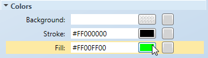
- The Brush Editor opens to select colors.
- Select Stroke > Stroke Thickness and enter line thickness for the frame (0 = no frame).
- Select Advanced > Disable selection. Selecting it prevents operation of the graphic.
- All other default settings in the Rectangle Properties dialog box can be taken over for this example.
Animating the Object
- The object is highlighted.
- The Evaluation Editor opens.
- The Rectangle Properties dialog box is open.
- Select Colors > Fill.
- In the System Browser, select Logical View.
- Select Logical > [Network name] \...\ [Plant] > [Digital input].
- Drag-and-drop the object to the Expression column of the Evaluation Editor.
- In the Rectangle Properties dialog box, the Fill property displays the use in the Evaluation Editor.
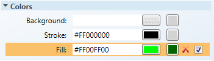
- Define the properties in the Evaluation Editor:
a. Select Property and Fill.
b. Under Type, select Discrete.
c. Under Type, select Reference. - Enter the data in the first row:
a. In the Condition column, enter the value 0.
b. In the Value column, enter the value Leave blank (= Transparent). - Click Insert new condition
 .
. - A second row is created for the conditions.
- Enter the data in the second row:
a. In the Condition column, enter the value 1.
b. In the Value column, enter the value 1.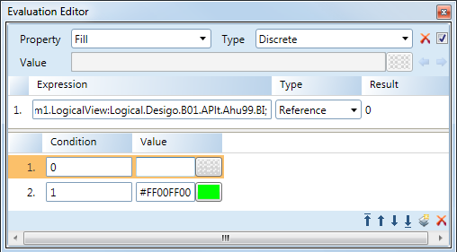
- Click Save .
Testing
- In the Mode group, click Test
 .
. - Click the View tab and then select Value Simulator.
- All data points used in the graphic display.
- In Object Selection, select the corresponding data point, and in the Value column, enter either the value 0 or 1.
- The content of the rectangle changes the height per the set value.
- Click Runtime
 .
.
- The inserted object cannot be selected or operated in the Online mode.
NOTE:
Select Automatic and then select Run Value Simulator. The simulation is run as per the set option.
Event lamp
The operating indicator change indicates the present state of a digital input in the alarm state:
- No alarm = Transparent or the corresponding background color
- Alarm = Red flashing
- (Optional) The
Fault, OverriddenandOut-of-Servicestates can be displayed for the same object.
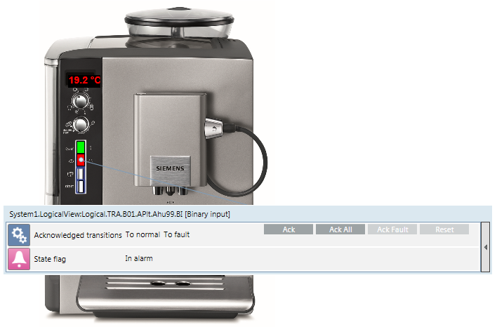
- The page for the coffee machine is open.
- The operating indicator is created.
- You require a digital input.
- In the Mode group, click Design.
- Select the Elements tab, and then select the Rectangle and drag-and-drop it to the graphics page.
- On the coffee machine, define the object size of the rectangle to be displayed.
- Select the Object.
- The Rectangle Properties dialog box opens.
- Select Colors.
- Select Fill to define the color for the state Normal.
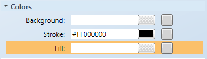
- The Brush Editor opens to select colors.
- Select Stroke > Stroke Thickness and enter line thickness for the frame (0 = no frame).
- You can use all the default settings in the Rectangle Properties dialog box for this example.
Animating the Object
- The object is highlighted.
- The Evaluation Editor opens.
- The Rectangle Properties dialog box is open.
- Select Colors > Fill.
- In the System Browser, select Logical View.
- Select Logical > [Network name] \...\ [Plant] > [Digital input].
- Select the Operation tab, and then the State Flag property.
- Drag-and-drop the object from Operation tab to the Expression column of the Evaluation Editor.
- The data point reference in the field is: x.x.x.digitalInput;.Status_Flags.
- In the Rectangle Properties dialog box, the Fill property displays the use in the Evaluation Editor.
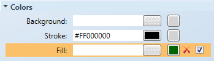
- Define the properties in the Evaluation Editor:
a. Select Property and Fill.
b. Under Type, select Discrete.
c. Under Type, select Reference. - Enter the data in the first row:
a. In the Condition column, enter the value &1.
b. In the Value column, enter the value 1. - (Optional) Click Insert new condition to display another state.
- A second row is created for the conditions.
- (Optional) Enter the data in rows 2‒4:
- In the Condition column, enter the value &2, &4 or &8.
- (Optional) In the Value column, enter the value 1.
- Click Save.
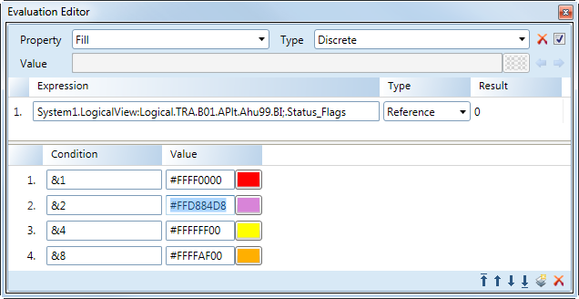
Alarm States of the Status Flag | |
state | Bit (in the Condition column) |
Alarm | 1 |
Trouble | 2 |
Overridden | 4 |
Out of service | 8 |
Display Alarm Blinking
- The object is highlighted.
- The Evaluation Editor opens.
- The Rectangle Properties dialog box is open.
- Select Layout > Blinking.
- In the System Browser, select Logical View.
- Select Logical > [Network name] \...\ [Plant] > [Digital input].
- In the Operation tab, select the State Flag property.
- Drag-and-drop the object from Operation tab to the Expression column of the Evaluation Editor.
- The data point reference in the field is: x.x.x.digitalInput;.Status_Flags
- In the Rectangle Properties dialog box, the Blinking property displays the use in the Evaluation Editor.
- Define the properties in the Evaluation Editor:
a. Select Property and Blinking.
b. Under Type, select Discrete.
c. Under Type, select Reference. - Enter the data in the first row:
a. In the Condition column, enter the value 0.
b. In the Value column, clear the check box. - Click Insert new condition to display another state.
- A second row is created for the conditions.
- Enter the data in the second row:
- In the Condition column, enter the value 1.
- In the Value column, select the check box.
- Click Save.
Testing
- In the Mode group, click Test.
- Click the View tab and then select Value Simulator.
- All data points used in the graphic display.
- In Object Selection, select the corresponding data point, and in the Value column, enter one of the following values:
- 1 = Alarm
- 2 = Fault
- 4 = Overridden
- 8 = Out of Service
- The content of the right corner changes the color as per set value. In alarm state, the rectangle is blinking.
Temperature Display
Displays the water temperature for the coffee machine's tank
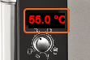
.- The page for the coffee machine is open.
- The operating indicator for the coffee machine is created.
- You require an analog input.
- In the Mode group, click Design .
- Select the Elements tab, Text
 and then drag-and-drop it to the graphics page.
and then drag-and-drop it to the graphics page. - On the coffee machine, define the object size of the text for display.
- Select the Object.
- The Text Properties dialog box opens.
- Select Rectangle Properties > Text.
- Define the properties:
- Select Text and enter the description Temperature.
- Select Text Type and the Formatted Value option.
- Select Units and enter the description °C.
- Select Precision and enter 1 (the value displays to one decimal point).
- Change additional text properties as needed, including size, bold face, color, and so on.
Level Indicator
The height of the water column is graphically displayed.
- The page for the coffee machine is open.
- The temperature display for the coffee machine is created.
- You require an analog input.
- In the Mode group, click Design .
- Select the Elements tab, and then select the Rectangle and drag-and-drop it to the graphics page.
- On the coffee machine, define the object size of the rectangle to be displayed.
- Select the Object.
- The Rectangle Properties dialog box opens.
- Select Colors.
- Select Fill to define the color in Design mode and offline print.
- The Brush Editor opens to select colors.
- Select Stroke > Stroke Thickness and enter line thickness for the frame (0 = no frame).
- All other default settings in the Rectangle Properties dialog box can be taken over for this example.
Animating the Object
- The object is highlighted.
- The Evaluation Editor opens.
- The Rectangle Properties dialog box is open.
- Select Colors > Clip Top.
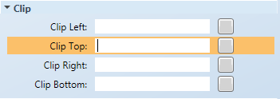
- In the System Browser, select Logical View.
- Select Logical > [Network name] \...\ [Plant] > [Digital input].
- Drag-and-drop the object to the Expression column of the Evaluation Editor.
- In the Rectangle Properties dialog box, the Clip Top property displays the use in the Evaluation Editor.
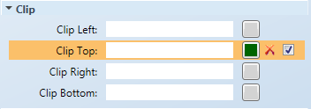
- Define the properties in the Rectangle Properties dialog box:
- Select Colors > Fill.
- The Brush Editor opens to select colors.
- Select Colors > Stroke and enter Stroke = 0 for the frame.
- Define the properties in the Evaluation Editor:
a. Select Property and the Clip Top option.
b. Under Type, select the Linear option.
c. Under Type, select Reference. - Enter the data in the Min row:
- In the Range column, enter the value 0.
- In the Value column, enter the value 100%.
- Enter the data in the Max row:
- In the Range column, enter the value 100.
- In the Value column, enter the value 0%.
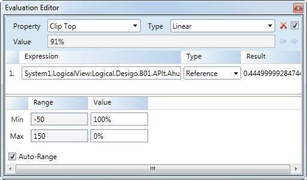
- Click Save .
Clip Top Functionality
For the clip top function, the maximum level or temperature (100% or 100°C) must be entered at minimum value. This is because the zero point of the display is at the top and the value moves downward (black arrow). The maximum value indicates the end of the display (0% or -30°C).
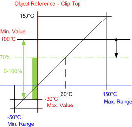
NOTE:
To display a tank object with a dynamic level indicator, you must draw the tank using a second inanimate background object. If selecting a frame for an animated object, it remains animated in the same ratio as the level indicator.
Testing
- In the Mode group, click Test .
- Click the View tab and then select Value Simulator.
- All data points used in the graphic display.
- In Object Selection, select the corresponding data point and in the Value column, enter the value of either 0, 50 or 100.
- The content of the rectangle changes the height per the set value.
NOTE:
Select Automatic and then select Run Value Simulator. The simulation is run as per the set option.
Position Indicator
The position of the corresponding coffee selection is displayed with a knob .
- The page for the coffee machine is open.
- The level indicator is created for the coffee machine.
- You require a multistate input.
- In View, in the Workspace tab, Display Grid and Snap are enabled.
- In the Mode group, click Design .
- Select the Elements tab, and the Ellipsis
 and drag-and-drop it to the graphics page.
and drag-and-drop it to the graphics page.
NOTE: For even easier object editing, avoid creating it on the image of the coffee machine. - Select the size of the circle (Layout > Width and Height = 24).
- Using the Brush Editor, select the color and radiant of the knob.
- Create a second circle for the position indicator and define the properties:
- Layout > Width and Height = 8
- Colors > Stroke = White
- Colors > Fill = Black
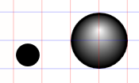
- Move the Position indicator to the knob
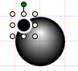
. - Highlight both objects and click Selection > Middle Alignment
 .
. - The 0‒degree position is defined
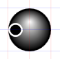
. - Highlight both objects and click Selection > Group
 .
. - In the Group Properties dialog box, define the pivot point for the knob:
- Layout > Angle center X = 12 (half of the circle size)
- Layout > Angle center Y = 12 (half of the circle size)
- The pivot point is defined
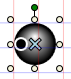
.
NOTE: Object grouping must be rescinded if the point is not defined correctly. As a result all definitions are lost for the grouped object in the Evaluation Editor. - Move the groups knob indicator to the correct position on the coffee machine
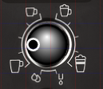
. - Select the actual size of the knob on the coffee machine, for example Layout > Width and Height = 20.
Animating the Object
- The object is highlighted.
- The Evaluation Editor opens.
- The Group Properties dialog box is open.
- Determine the angle for each position for display (here for each of the cups):
- Select the knob at the green anchor
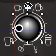
. - Turn the marking of the knob to the lower left cup
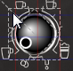
. - While rotating, a dotted frame is displayed using an angle line.
- In the Group Properties dialog box, in Layout > Angle the angle displays, for example, ‒45 degrees.
- Define the corresponding angle (60, 120 and 225 degrees) for all other cups.
- Select Group Properties > Layout > Angle.
- In the System Browser, select Logical View.
- Select Logical > [Network name] \...\ [Plant] > [Multistate input]
- Drag-and-drop the object to the Expression column of the Evaluation Editor.
- In the Group Properties dialog box, the Angle property displays the use in the Evaluation Editor.
- Define the properties in the Evaluation Editor:
a. Select Properties and Angle.
b. Under Type, select Discrete.
c. Under Type, select Reference. - Enter the data in the first row:
- In the Condition column, enter the value 1.
- In the Value column, enter the value -45.
- Click Insert new condition to display another state.
- A second row is created for the conditions.
- Enter the data in rows 2 through 4:
a. In the Condition column, enter the value 2, 3 and 4.
b. In the Value column, enter the value 60, 120 and 225. - Click Save .
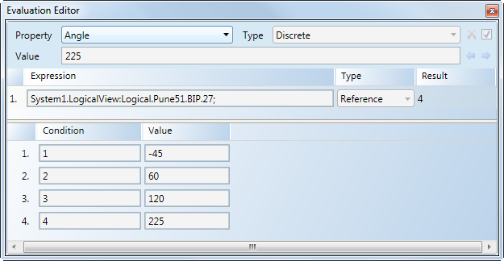
NOTE:
All definitions in the Evaluation Editor are lost for the grouped object if you have to ungroup the object. Prior to ungrouping, document the settings made in the Evaluation Editor.
Testing
- In the Mode group, click Test .
- Click the View tab and then select Value Simulator.
- All data points used in the graphic display.
- In Object Selection, select the corresponding data point and, in the column Value column, enter the value 1, 2, 3 or 4.
- The knob changes the display position as per the set value.
Operating
An operating object is required to switch on and off the coffee machine. Operation in the Online mode occurs in the Extended operation tab.
- The page for the coffee machine is open.
- The temperature display for the coffee machine is created.
- You require a digital output.
- In the Mode group, click Design .
- Select the Elements tab, and then select the Rectangle and drag-and-drop it to the graphics page.
- On the coffee machine, define the object size of the rectangle that will display.
- Select the Object.
- The Rectangle Properties dialog box opens.
- Select Colors.
- Select Fill to define the color in Design mode and offline print.
- The Brush Editor opens for color selection.
NOTE: Select a color that comes closest to the object background. Selecting for operation is difficult if you select transparent. - (Optional) Select Stroke > Stroke Thickness and enter the line thickness for the frame (0 = no frame).
- All other default settings in the Rectangle Properties dialog box can be taken over for this example.
Animating the Object
- The object is highlighted.
- The Rectangle Properties dialog box is open.
- Select Advanced > Selection reference.
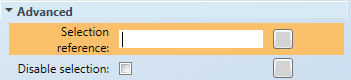
- In the System Browser, select Logical View.
- Select Logical > [Network name] \...\ [Plant] > [Digital Output]
- Drag-and-drop the object to the Selection Reference field in the Rectangle Properties dialog box.
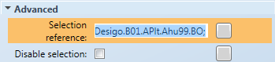
NOTE: The Disable Selection check box must be cleared. - Click Save .
Testing
- In the Mode group, click Runtime .
- Select the Operating object on the coffee machine.
- A red frame displays around the operating object and the properties display in the Extended Operation tab.
- Click Command.
- In the Value drop-down list, select On or Off.
- Click Send.
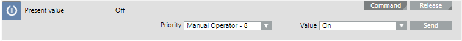
- The coffee machine is switched on or off.
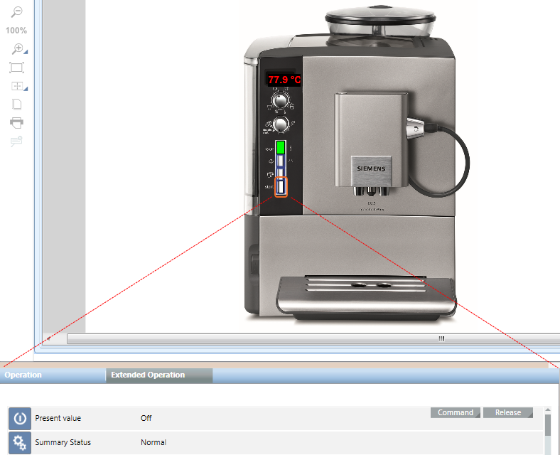
Viewport Coffee Machine
Areas from the existing graphics page can also be defined as zoomed viewport.
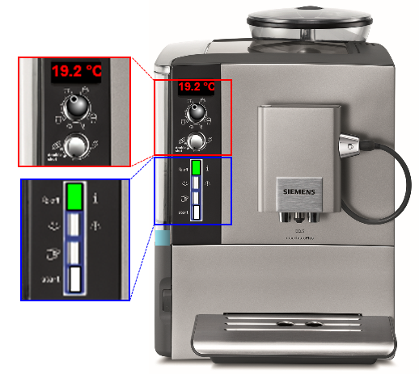
- System Manager is in Engineering mode.
- The Design or Test mode is selected.
- The graphics page is completed and open.
- In the Viewports group, click Create Viewports
 .
. - Click Manual Viewport
 .
. - Define the viewport view size
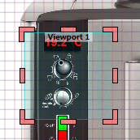
. - In the Viewport Properties dialog box, select General > Description, and enter a description for the viewport.
- Click Save
 .
.
- The viewport is saved below the corresponding graphics page and is displayed in System Browser.
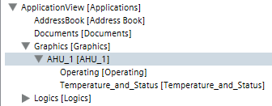
NOTE:
Functionality of the viewport can only be opened in the Application View in Online mode.
Testing
- The graphics page and viewport are created.
- Click Engineering.
- In System Browser, select Application View.
- Select Applications > Graphics > [graphics page].
- Click the Default tab.
- The graphics page is displayed in online mode.
- Select Applications > Graphics > [graphics page] > [Viewport].
- The viewport is displayed.
Assigning a User Guide
A document can be assigned to a graphics page (or other objects). In this manner, you can quickly access the user's guide in the event of a fault to the coffee machine.
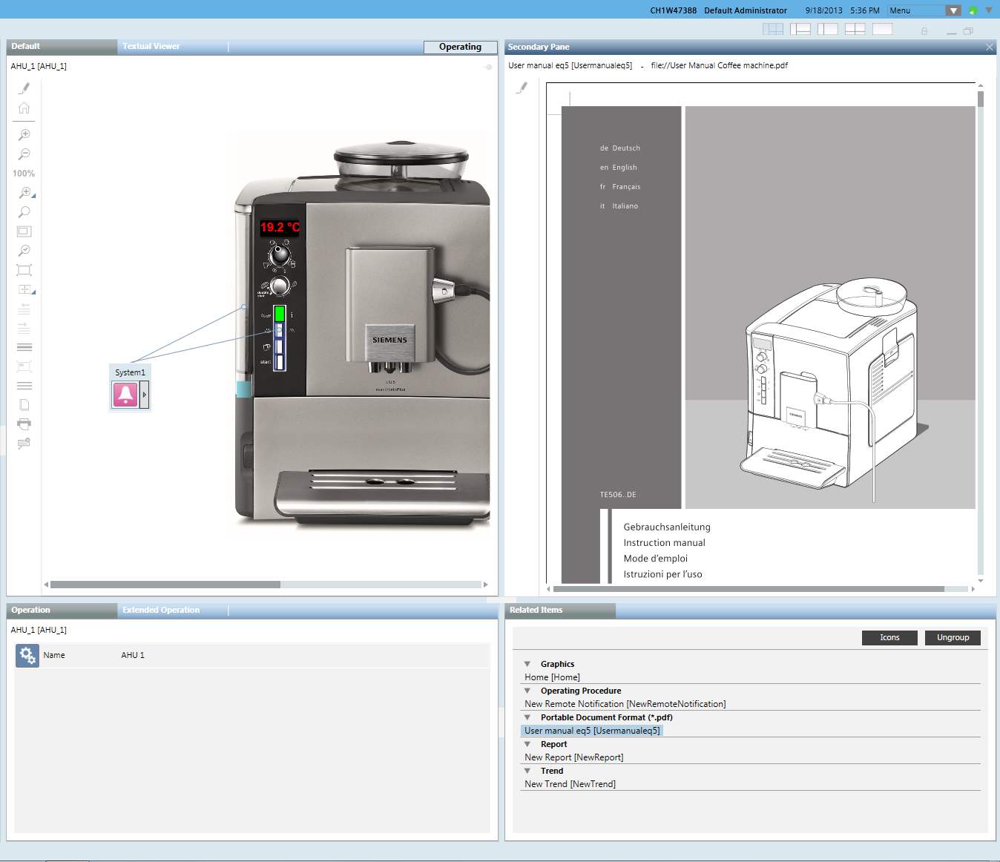
- System Manager is in Engineering mode.
- In Windows Explorer copy (outside of Desigo CC) the user guide to the following folder: ... [Installation Drive]:\[Installation Folder]\[Project Name]\Documents.
- Switch back to Desigo CC.
- In System Browser, select Application View.
- Select Applications > Documents.
- The Documents application opens.
- On the right side, select Settings and then select the File option.
- Open the drop-down list and select the corresponding document.
- Only those documents are displayed that are located in the ...[Installation Drive]:\[Installation Folder]\[Project Name]\Documents folder.
- Select Applications > Graphics > [graphics page].
- Drag-and-drop the graphics page object to the Linked Objects dialog box.
- Click Save As
 .
. - In the Save object as dialog box, enter the name and description.
- Click OK.
- The document is linked to the graphics page.
- In Online mode, the document link is displayed under Related Items under Document.
Testing
- The graphics page is created and a document is assigned to the page.
- Click Engineering.
- In System Browser, select Application View.
- Select Applications > Graphics > [graphics page].
- Click the Default tab.
- The graphics page is displayed in online mode.
- Click the document in the Related Items tab, under Document.
- The assigned document opens in the Secondary pane.